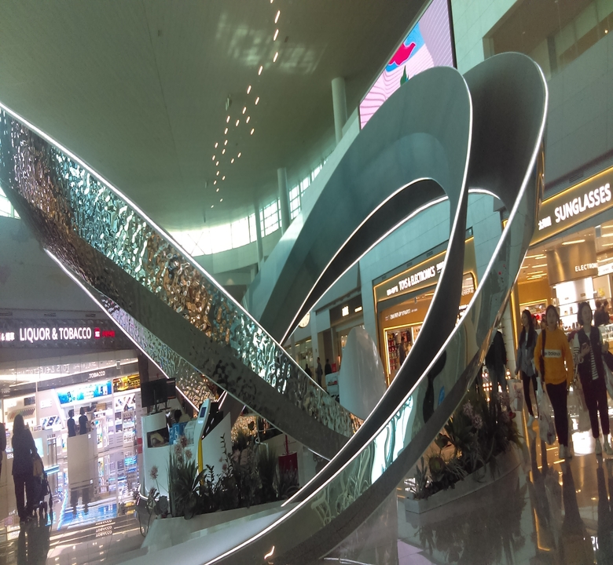
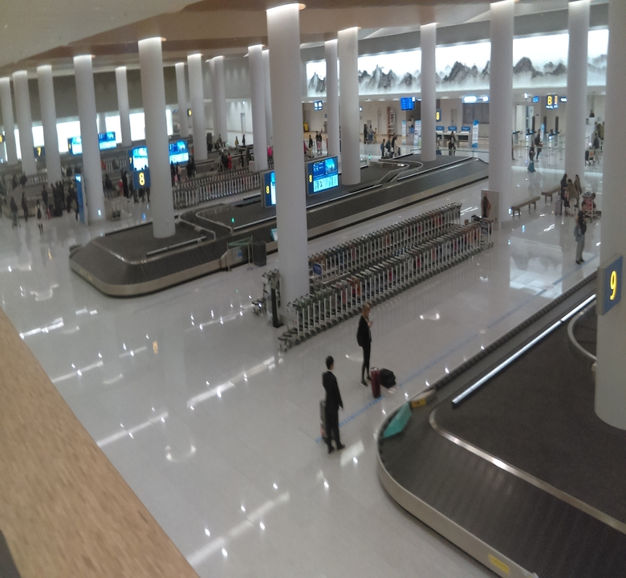
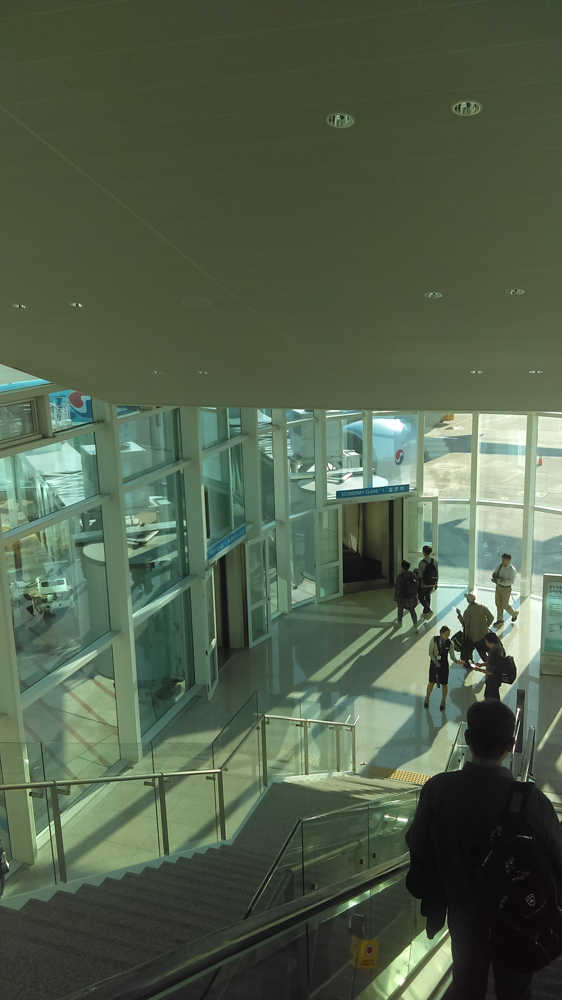
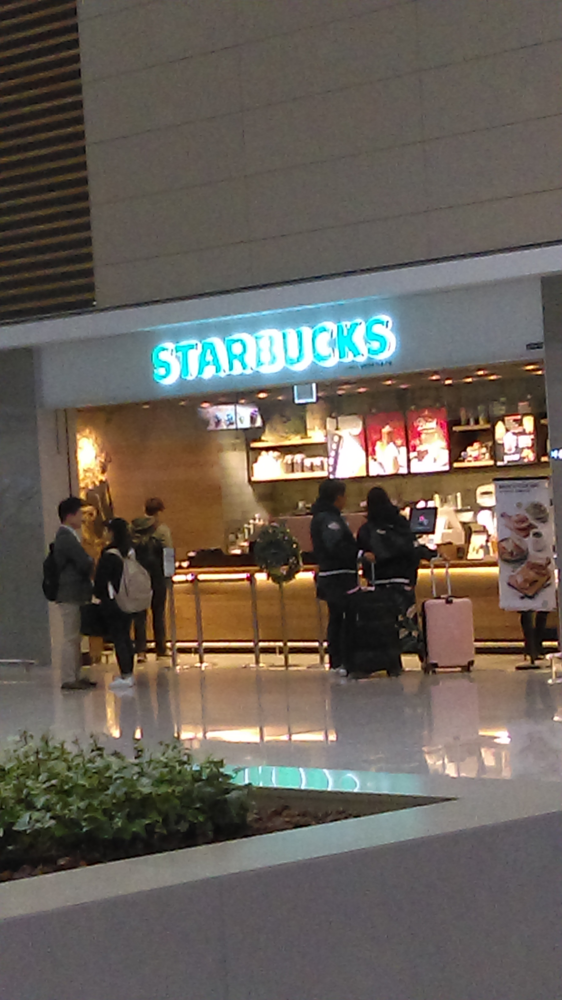

關於機場
首爾仁川國際機場於 2001/3/29 正式開幕。從 2005 年至 2016 年，仁川機場被票選為全球最佳的機場。仁川機場是首爾最主要的國際機場。仁川幾場和首爾金浦國際機場並列為首爾聯外的兩大機場，且是韓國最大的機場。距離首爾市中心大約 45 公里。仁川機場的第二航廈於 2018/1/18 正式啟用，為了紓減第一航廈壅擠的人潮。
仁川機場是韓國國際客運及貨運的航空樞紐。它是亞洲第 6 個非常繁忙的國際機場。
同時，也是韓國兩家最大的航空公司，大韓航空和韓亞航空的主要基地。仁川機場被票選為 2020 年全球最佳的轉機機場。第二航廈被票選為 2020 年全球最佳的航廈。

二航廈的航空公司
大韓航空 Korean Air 達美航空公司 Delta Airlines 法國航空 Air France 荷蘭皇家航空 KLM Royal Dutch Airlines 墨西哥航空 Aeroméxico 義大利航空 Alitalia 中華航空公司 China Airlines 嘉魯達印尼航空 Garuda Indonesia 廈門航空 Xiamen Air 捷克航空公司 Czech Airlines 俄羅斯航空 Aeroflot
航廈照片
出境大廳
出境大廳
登機門
登機門

入境大廳
入境大廳
韓式料理美食街
韓式料理美食街
往出境大廳的手扶梯
往出境大廳的手扶梯
美麗的花朵
美麗的花朵
出境大廳
出境大廳
通關後的商店

通關後的商店
機器人
機器人
安檢處
安檢處
領行李處

領行李處
韓國傳統文化體驗中心
韓國傳統文化體驗中心

手扶梯
手扶梯

樓層
樓層
韓式料理美食街
韓式料理美食街

大衣寄存處和洗衣店
大衣寄存處和洗衣店

第二航廈的模型
第二航廈的模型
31 冰淇淋
31 冰淇淋

往展望台的手扶梯
往展望台的手扶梯

出境大廳
出境大廳
下樓前往登機門

下樓前往登機門
免税區
免税區

香港的漢堡餐廳 Shake Shack
香港的漢堡餐廳 Shake Shack

自動購買公車票機
自動購買公車票機

入境大廳的星巴克

入境大廳的星巴克
出境大廳
出境大廳

樹木和花朵
樹木和花朵

樹木和花朵
樹木和花朵

前往登機門的走道
前往登機門的走道
美麗的花朵
美麗的花朵
森林航廈
森林航廈
通關處
通關處

美食商圈
美食商圈

購買交通的票區域
購買交通的票區域
從天空看下去
從天空看下去
大韓航空的報到櫃台
大韓航空的報到櫃台
孩子的遊樂區
孩子的遊樂區
仁川機場的 VR, 展景台
仁川機場的 VR, 展景台
美麗的花朵
美麗的花朵
很大顆的球
很大顆的球
大韓航空的報到櫃台
大韓航空的報到櫃台

美麗的樹木
美麗的樹木
航廈設施
第二航廈有許多新的設施與設計，能夠讓旅客體驗全新的航廈。
.jpg)
1. 綠化機場
讓旅客最讚嘆的乃是第二航廈有了似乎在森林的感覺。跟第一航廈比起來，第二航廈多了綠色植物和花，並且餐廳的設計都偏向森林系。而且不少都是包圍着機場大堂的餐廳而布置！這是與第一航廈最大的差別之一。綠化首爾仁川國際機場是韓國第一座。
2. 大量的新餐廳
第一航廈本來就有很多餐廳。但第二航廈再度增加不少新的餐廳。韓國、日北國和西式的餐廳全部都有盡量有，例如香港的漢堡餐廳 Shake Shack, Burger King 和 Lotteria. 能夠符合各位旅客的口味。旅客在首爾仁川國際機場停留或入境，可以享受不同的美食。其實，B1 到 4F 都有餐廳。
3. 連鎖 cafés
第一航廈都有的，第二航廈也一定少不了連鎖 cafés, 例如，美國著名的 Baskin Robins 31 冰淇淋。第二航廈當然也有 Dunkin' Donuts, Paris Croissant, Paris Baguette 等。能夠讓旅客簡單地享受一下甜點。在趕時間時，也可以快速地購買甜點，以填滿自己的杜子。
.jpg)
4. 韓國味道 - 韓式料理美食街
第一航廈的 B1 有很大的美食街。但第二航廈的 B1 有韓式料理美食街。各式各樣的傳統韓式料理均可在這裡吃得到。來仁川機場就要去韓式料理美食街享用道地的韓國美味，如麵類，拌飯，等)。韓式料理美食街是採用 food court 型的。來這裡時，要記得嘗試金洲的拌飯。味道真的很不錯。
5. 機場的交通
第二航廈有了新的交通接駁。有個問題是，無法從第二航廈走路到第一航廈。如果跑錯航廈，那就只能搭車到另外的下。機場的鐵路新增第二航廈站。旅客可以從首爾站搭車到第二航廈。非常地方便。B1 的樓層是第二航廈的交通中心，更比第一航廈方便多了。這裡有機場的巴士和 KTX 的站。

6. Hanjin Express 한진택배 寄放行李和行李包裝
萬一您的行李超過航空公司的規定，您可以使用 Hanjin Express 來將您的行李運送到您的目的地。除此之外，大韓航空的旅客可以使用在 Hanjin Express 櫃台的外套儲存服務。地點在一樓，與第 Gate 2 和 Gate 3. 三樓，靠近 H 的登機櫃台 check-in counter.

7. 洗衣店 & 大衣寄存處
非大韓航空的旅客，您可以使用在 B1F, 交通中心的外套間或洗衣店。七天六夜的儲存的費用大約一萬韓幣 KRW. 其他外套儲存服務，您可以使用在這裡的櫃檯，行李和鞋子維修服務。韓國冬天寒冷，但韓國旅客若要前往熱帶地區的話，會寄放外套在這裡。回國再去拿。

8. 母嬰室
如果有帶小孩或者嬰孩的旅客，您可以使用首爾仁川國際機場第二航廈所提供的母嬰室。在母嬰室裡，還有一間小的房間。若母親有需要母乳餵養您的嬰孩的話，就可以去小房間裡。這裡小房間的空間舒適。歡迎有需要的母親可以多多地利用。母嬰室裡也可以放行裡。

9. 藥局
這裡的藥局實在很方便。這裡很多東西都可以買得到。如果您有需要非處方藥、旅行藥物，等，您可以到第二航廈的藥局。但請一定記得，藥局不是二十四小時。所以，在您旅行之前，一定要確認一下營業的時間。藥局是在 B1. 營業時間是 07:00-21:00.

9. 仁荷大學醫學中心
第二航廈有仁荷大學醫學中心。這裡提供的服務項目包含：一般護理、手術和緊急協助。地點位於第二航廈 Public Area 的西邊的 1BF. 他們營業的時間：週一至週五的 08:30-18:00. 週六至星期日 08:30-15:00. 有任何身體上的不適，等，可以到這裡請求協助。
10. 仁川機場的 VR, 展景台
仁川機場第二航廈有了 VR, 展景台，位於第二航廈的最頂樓 5F. 這可以透過展景台看到飛機起降。這裡可以欣賞到宣傳區域、展望台、新聞發布會區，休息室，等。這裡有很大的機場模型、 3D 映射技術的影像秀，仁川機場 VR 體驗，等。這是為了讓人可以留下深刻的印象。開放時間：07:00-20:00

11. 沐浴間
首爾仁川國際機場為轉機的旅客提供了免費的沐浴間。淋浴間是為旅客所設的。裡面提供給旅客毛巾、牙刷、牙膏、吹風機等等用品。不只是轉機的旅客，其他離境的旅客也可以使用。旅客只要出示登機證就能能夠進入享用。開放的時間為 06:00-21:00.
.jpg)
12. 過境旅館
仁川機場第二航廈内部有了過境的旅館。旅客要日間休息或過夜都可以。假如航班太早或者太晚的話，且不方便到市區住宿或不要花太多的住宿費，這是一個不錯的選項。過境旅館在第二航廈的 4F 252 號登機門口的附近。過境旅館 24 小時開放。歡迎旅客使用。
13. Nap Zone 睡眠室
旅客在機場過境時，不想要花錢住旅館，但又覺得坐着會腰酸背痛很不舒服。首爾仁川國際機場非常貼心為旅客預備了一個 Nap Zone. 裡面有非常舒適的躺椅讓你可以平躺著小睡休息。離境的大廳 4F 的 231 號 (西側) 和 268 號 (東側) 登機門口附近。
14. 免費充電設施
仁川機場内到處有充電的設施。就包刮候機室座位旁邊都有插座提供旅客使用。不用怕 3C 產品沒有電了。

15. 自助報到、自助託運行李
第二航廈的 3F 為旅客增加許多的自助報到機。這樣，就可以省去排隊的時間。旅客只要透過護照號碼或者預定編號就能夠領取登機證。自助託運行李則是需要自己稱重量。稱完後，再將行李標籤貼在行李箱的上面進行託運。請記得，每家航空公司的託運制度會不同。那要事先和航空公司確認一下。
16. 自動通關申請
不久，台灣和大韓民國兩國簽訂了「台韓互惠使用自動通關瞭解備忘錄」。台灣的旅客到大韓民國旅遊，商務活動就能註冊使用大韓民國的自助通關系統 (Smart Entry Service, SeS). 就不用再大排長龍的出入境。申請地點：仁川機場第二航廈 2F 公務機關服務區出入境管理事務所（管制區外). 營業的時間：星期一到星期日 (07:00-19:00). 申請的方式： 步驟 1): 攜帶台灣護照電子晶片護照，前往二航廈裡面的 SeS 註冊中心 步驟 2): 填寫且繳交電子申請表 步驟 3): 移民官會請你按壓指紋、拍大頭照 步驟 4): 在確認旅客沒有不良的紀錄後，就會核准您的申請，且在護照裡面貼上 SeS 自動通關註冊貼紙
17. 韓國傳統文化體驗中心